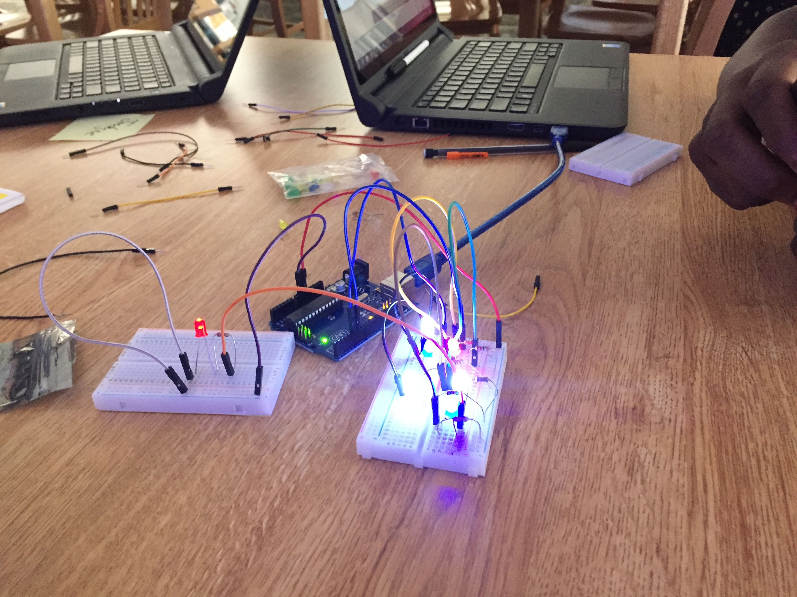

My website is actually a website starting from today (June 12, 2018)! I struggled with adding content on my site. At the end I decided to just a bunch of marine animals stuff because I have a lot of information about marine animals. I decided to change my index to the about page because it was pretty random and it fit way better in the about page. So the index is still empty. I feel like I really got the hang of using HTML.
Ciber security is a lot more complicated to do than what I intially thought. For starters we were working on the Caesar Cipher on javascript which became really difficult because we had to create a loop. In python create a loop was a little bit more easier. Although I didn't really get the hang of python, coding it for functions. We got the cipher to finally
We were learning about electricty using a breadboard. We were using ardiunos to power the circuits and to program them to blink at different rates. I was having problems at first because the light bulbs wouldn't light but that was easily fixed by switching the bulb direction. On my I attempted to connect multiple bread board together but couldn't. I strugggled connecting them until I connected the negative to the ground slot on the arduino.
We built toy cars that had a space for the arduino to go on. The car was pretty small and we built it with little to no difficulty but it was time consuming. The arduino then allowed us to program are toy car. One of the problems that we had was that we accidently put the small motors for the wheels upside and on the wrong sides so the car was moving backwards while it was suppose to move foward. To fix this problem we programmed the car to move backwards whenever it wanted to move foward. The second problem we had was that the car wasn't exactly moving straight so to fix that we programmed one of the motors to go faster than the other